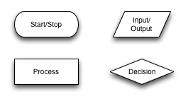
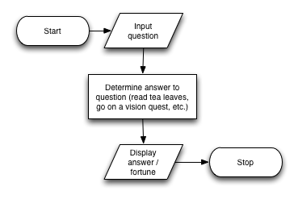
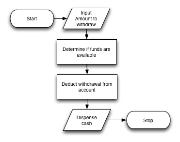
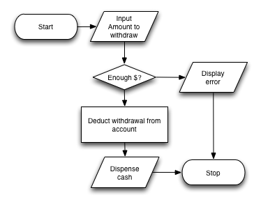

Note that Starting Out with Python mentions a very similar workflow (ehhh… they're pretty much say the same thing; I'd accept either on an exam):
design the program
write the code
correct syntax errors
test the program
correct logic errors
(go back to step 1)
Some Steps are More Important Than Others
Which of these steps do you think is the most important? →
design the program
write the code
correct syntax errors
test the program
correct logic errors
Requirements Gathering / Design
It would seem like the most important part of programming is… well… programming. However, determining what you're programming and how you're going to do it is arguably more important! Before getting into code, you must:
understand what your program is supposed to do
(through requirements gathering)
…and design how your program will work
this is the foundation of your program!
can you break down your program into discrete tasks or components?
is there an algorithm involved?
Some Tools in Your Toolbox
Starting Out with Python introduces two tools to help start thinking about program design:
pseudocode
flow charts
Pseudocode
Sometimes it's helpful to not have to deal with the syntax intricacies and implementation details with writing actual code.
that's where pseudocode comes in!
pseudocode is basically fake code
it's more like natural language!
used to sketch out actual code… for example, think of a thermostat program
measurethetemperatureoftheroomifit's over the temperature threshold turn on the air conditioner
Flow Charts
Flow charts help graphically depict the steps involved in a process or program. Here are some common elements in a flow chart:

Fortune Telling Program
Imagine the following fortune telling program:
Whatisyourquestion?>What's the meaning of life?42
The corresponding flow chart may look like…
Fortune Telling Program Flow Chart
Here's what the flow chart for the previous program might look like:

Make a Flow Chart for an ATM
ATM Flow Chart, Example 1

ATM Flow Chart, Example 2

Input, Processing, and Output
The majority of the programs that we write in class will consist of:
user driven input (usually via keyboard)
some sort of processing on the input data
… and finally output (usually via the Python console)
Which leads me to … Homework #1 (some basic input/output and processing)